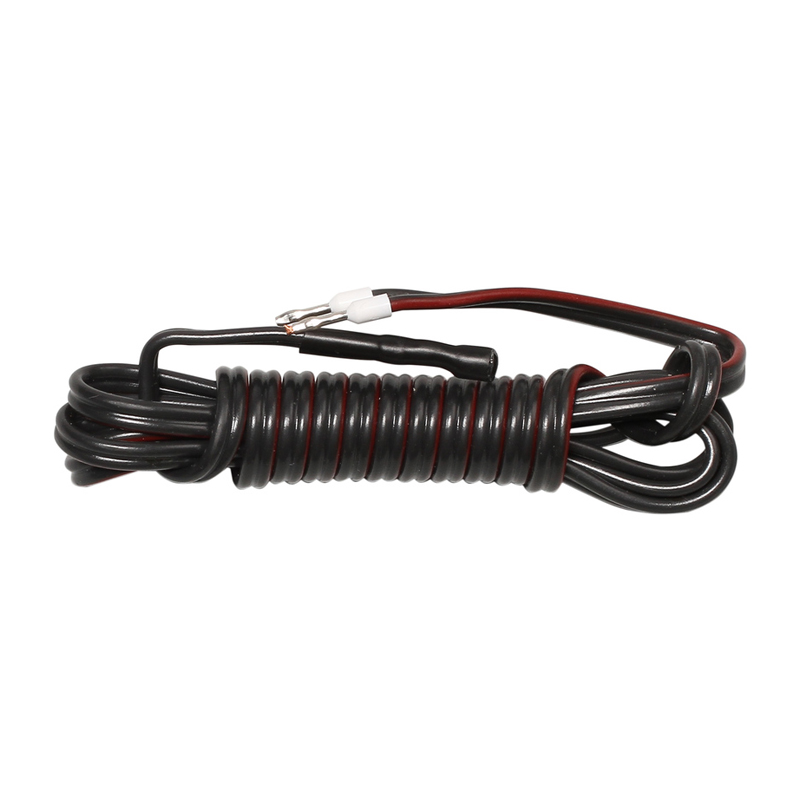

Термостаты / KTY-81-110 Датчик температуры

Базовый и недорогой датчик температуры
Производитель: ПЭЛЗ (Россия: Петербург)
Технические характеристики
| Регистрируемый параметр | температура |
| Диапазон измерения температур | от -40 до +140 °С |
| Температура эксплуатации | от -40 до +95 °С |
| Максимальная длина кабеля | 20 метров |
Область применения
ПЭЛЗОбогрев резервуаров
Обогрев кровли и водостоков
Поддержание температуры трубопроводов
Предотвращение замерзания труб с водой